スペイン・ポルトガルは山がちな地形で耕作地が少なく、早くから海外貿易によって活路を開こうとしていました。
ヴェネツィアの商人マルコ＝ポーロ
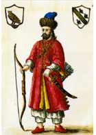
14世紀ごろから肉食が流行し始め、肉の臭みを消すため、インドやインドネシアでとれる香辛料香辛料コショウ・シナモン・ナツメグなど。肉の保存や臭み消しに使われ、当時は黄金と同等の価値を持つ貴重品でした。（コショウなど）が必要とされました。しかし陸路はオスマン帝国オスマン帝国（1299〜1922）トルコ人のイスラーム帝国。アジアとヨーロッパをつなぐ陸路を支配し、ヨーロッパに海の新航路を探させる原因となりました。が支配していたため通行が困難でした。羅針盤羅針盤磁石で方角を知る道具。昼夜・天候に関わらず方向がわかるため、大洋航海を可能にした重要な発明です。の改良により新航路の発見を目指すようになりました。
ポルトガルのエンリケ航海王子
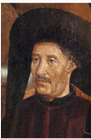
| 年 | 人物 | 到達地・業績 |
|---|---|---|
| 1488年 | バルトロメウ＝ディアス
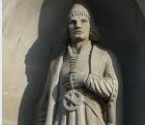 バルトロメウ＝ディアス（1450〜1500） ポルトガルの探検家。1488年、アフリカ最南端の岬に到達しました。「嵐の岬」と名付けましたが、後にポルトガル王が「喜望峰（希望の岬）」と改名しました。 | アフリカ大陸最南端の喜望峰喜望峰アフリカ大陸最南端の岬。ディアスが1488年に到達。「希望の岬」の意味で、インド航路開拓の希望を象徴しています。に到達しました。 |
| 1498年 | ヴァスコ＝ダ＝ガマ
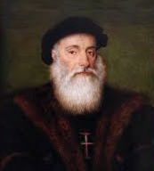 ヴァスコ＝ダ＝ガマ（1469〜1524） ポルトガルの航海者。喜望峰を回ってアフリカ東岸を北上し、1498年にインドのカリカットに到達。香辛料を現地の60倍の値段で売って大きな利益を得ました。 | 喜望峰を回ってインドのカリカットカリカット（現コーリコード）インド南西部の港町。ヴァスコ＝ダ＝ガマが1498年に到達した目的地で、香辛料貿易の拠点でした。に到達しました。香辛料は現地の60倍の金額で売れました。 |
後にポルトガルは中国のマカオマカオ中国南部の港。ポルトガルが対中国貿易の拠点として使用。1999年まで400年以上ポルトガルの支配下にありました。を拠点に貿易を行い、マラッカ王国を滅ぼして東南アジアにも進出しました。
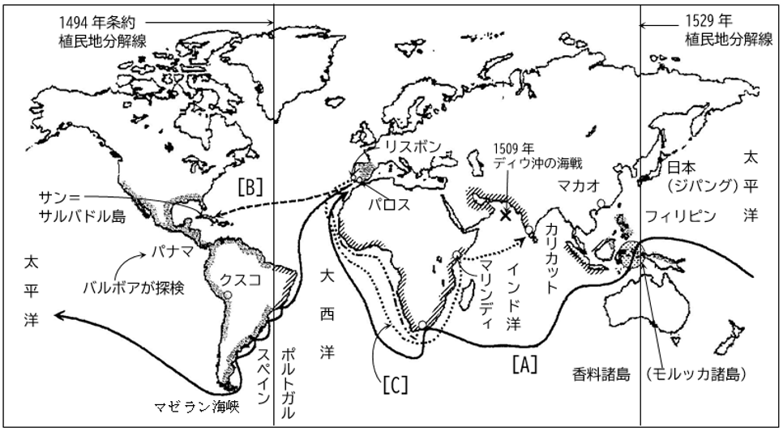
🗺 大航海時代の航路図地図中の航路A・B・Cを語群から選んで入れましょう。
1492年、コロンブス
コロンブス（1451〜1506）
イタリア、ジェノヴァ出身の航海者。「地球は丸い」という地球球体説をもとに、西回りでインドへ行こうとスペイン女王 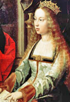
その後アメリゴ＝ヴェスプッチ
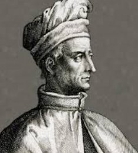
1494年、スペインとポルトガルの領有権を分割したトルデシリャス条約トルデシリャス条約（1494年）スペインとポルトガルが結んだ条約。大西洋に南北の境界線を引き、西はスペイン領、東はポルトガル領と分けました。が結ばれ、ブラジルはポルトガル領、アメリカ大陸の大半はスペイン領となりました。
1519〜22年、スペイン王の命を受けたポルトガル人
マゼラン
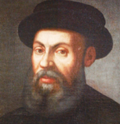
スペイン王カルロス1世カルロス1世（在位1516〜56）スペイン王（神聖ローマ皇帝としてはカール5世）。コルテスにアステカ征服を、ピサロにインカ征服を命じました。（神聖ローマ皇帝カール5世）は征服を命じました。
| 征服者 | 年 | 征服した国・帝国 |
|---|---|---|
| コルテス
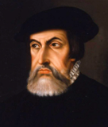 コルテス（1485〜1547） スペインの征服者。わずか400人の部下でメキシコのアステカ王国を征服しました。鉄砲・馬・疫病（天然痘）を武器に、数百万人の帝国を倒しました。 | 1521年 | メキシコのアステカ王国アステカ王国メキシコ中央高原に栄えた文明国家。首都テノチティトランを中心に高度な文明を誇りましたが、1521年にコルテスに滅ぼされました。を400人の部下を率いて征服しました。 |
| ピサロ
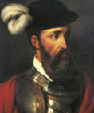 ピサロ（1478〜1541） スペインの征服者。わずか180人の兵士でペルーのインカ帝国を征服しました。インカ皇帝アタワルパを騙し討ちで捕まえ、膨大な金銀を奪いました。 | 1533年 | 現在のペルーのインカ帝国インカ帝国現在のペルーを中心とした南米の大帝国。精巧な石造建築や道路網で知られましたが、1533年にピサロに滅ぼされました。を180人の兵で征服しました。 |
これらの征服者をコンキスタドールコンキスタドールスペイン語で「征服者」の意味。コルテス・ピサロのように、アメリカ大陸の先住民の国を征服したスペイン人を指します。（征服者）といいます。征服後、インディオへの強制労働・年貢取り立てを認めるエンコミエンダ制エンコミエンダ制スペインが征服地で行った制度。インディオへの強制労働と年貢取り立てを征服者に認めるもので、過酷な搾取が行われました。が敷かれました。
聖職者のラス＝カサス
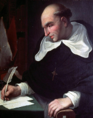